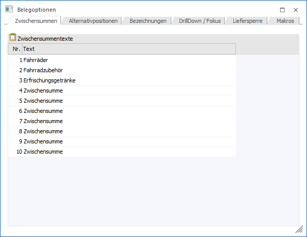
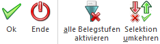

In dem Menüpunkt…
1 WinLine FAKT
1 Stammdaten
1 Belegstammdaten
1 Belegoptionen
… können u.a. Bezeichnungen für Zwischensummen, Alternativpositionen und Spalten in der Belegmitte hinterlegt werden.

Das Fenster unterteilt sich hierbei in die folgenden Register, welche in den nachfolgenden Kapiteln beschrieben werden:
ü Register "Zwischensummen"
In dem
Register "Zwischensummen" können die 10 möglichen Zwischensummen mit einem
individuellen Text versehen werden.
ü Register "Alternativpositionen"
In
dem Register "Alternativpositionen" können die 9 möglichen Alternativpositionen
mit einem individuellen Text versehen werden.
ü Register "Bezeichnungen"
In dem
Register "Bezeichnungen" können u.a. die Faktorfelder mit einer individuellen
Bezeichnung versehen werden.
ü Register "DrillDown / Fokus"
Im
Register "DrillDown / Fokus" kann u.a. das Programmverhalten bei Anwahl des
Beleg-DrillDowns und die Fokussteuerung in der Belegerfassung definiert
werden.
ü Register "Liefersperre"
In dem
Register "Liefersperre" kann definiert werden, ob Liefersperren berücksichtigt
werden sollen.
ü Register "Makros"
Im Register
"Makros" kann eingestellt werden, wie die WinLine reagieren soll, wenn bei der
Belegerfassung neue Artikel zu bestehenden Package-Artikeln hinzugefügt werden
sollen.
Buttons

Ø Ok
Mit dem "Ok"-Button bzw. der Taste F5 werden die Eingaben gespeichert.
Ø Ende
Durch Drücken des Buttons "Ende" bzw. der ESC-Taste wird das Fenster geschlossen. Nicht gespeicherte Änderungen werden dabei verworfen.
Ø alle Belegstufen aktiveren (nur im Register "Liefersperre")
Durch Anwahl dieses Buttons werden alle Belegstufen aktiviert.
Ø Selektion umkehren (nur im Register "Liefersperre")
Mit Hilfe dieses Buttons wird die Selektion der Belegstufen umgekehrt.